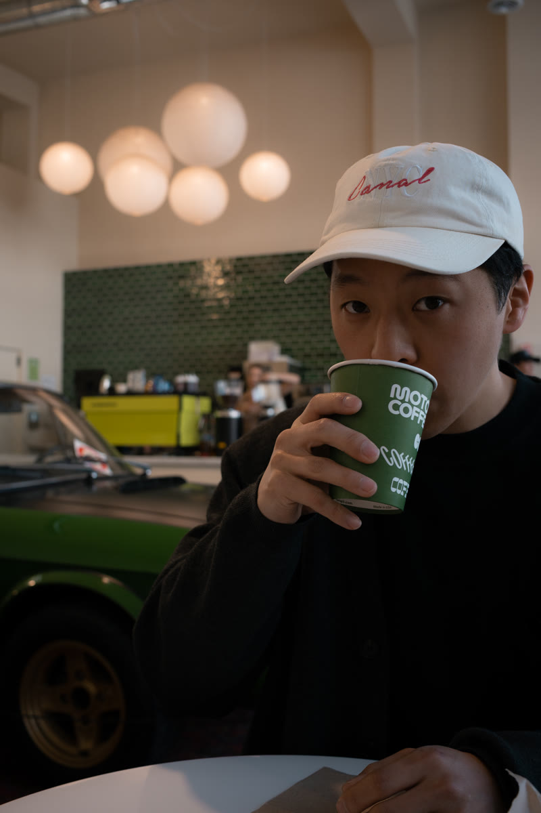
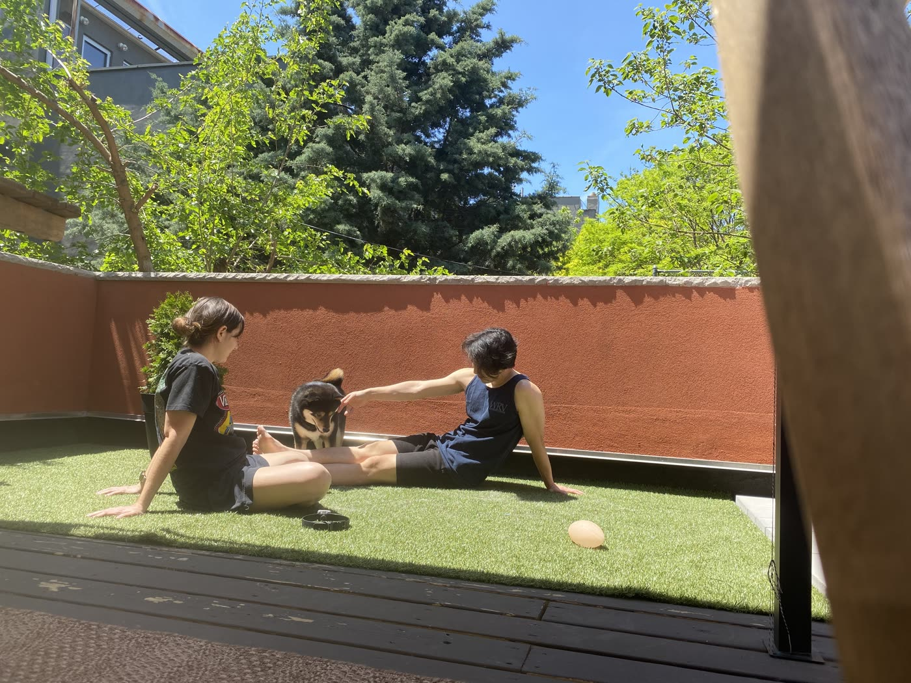
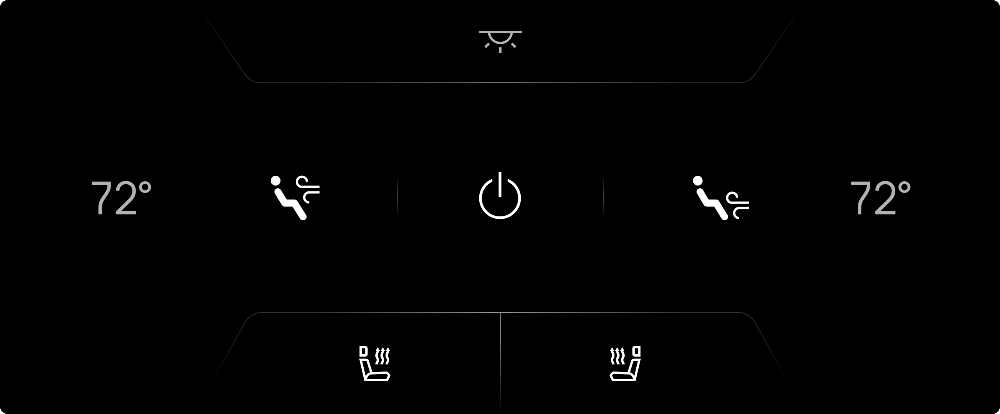
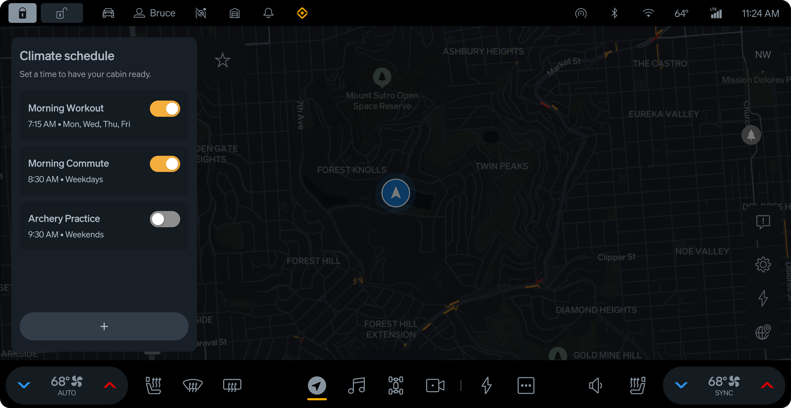
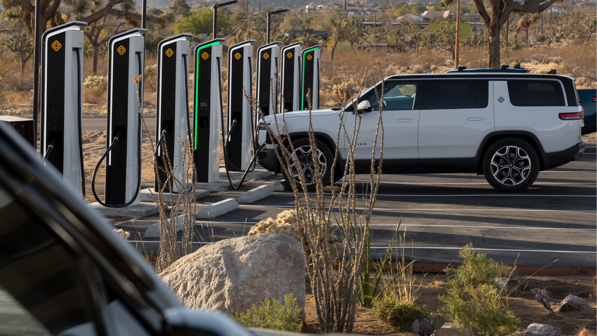
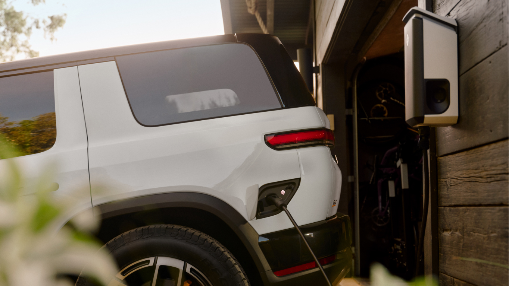

I like simple interfaces, a bit of playfulness, and making complex technology useful.


Vehicle features designed for daily life with a Rivian.

Rear Display
The rear display offered little beyond seat heat and static climate status. I shaped its screen composition, proportions, and interaction model to give passengers a clear way to move between media, trip details, and climate.
Camping App
Camping controls were buried behind a settings toggle, making the vehicle's outdoor capability easy to miss. I brought climate, lighting, battery use, and power access into a dedicated in-vehicle app for everything from multi-day stays to backyard movie nights.
Initial release
Climate Schedule
Preconditioning supports comfort and battery health, but its benefits are easy to miss. I designed the schedule around familiar routines, so drivers can set cabin climate before a trip without needing to understand the technology.
Biome Lighting
Ambient lighting can feel decorative or distracting in a carefully designed cabin. I created restrained presets that let owners personalize their space while keeping the interior cohesive with Rivian's design language.
Pet Comfort
Leaving a pet in a vehicle can raise safety concerns for owners and passersby. I paired cabin temperature control with a clear, reassuring display to help others see the pet is safe.
Initial releaseOut in the world
Camping App
Pet Comfort
Climate Schedule
Camping App
Biome Lighting
Rear Display
Conversational AI built for the road.
Deeply integrated
Rivian Assistant brings together your vehicle, your apps and habits, and the world around you, allowing you to do things that simply weren't possible while driving.
Out in the world · 24s
Restraint, by design
The interaction model defines when the Assistant speaks, shows information, or yields to the driver. One shared behavior across voice and screen.

Protect personal info and prevent vehicle theft.
Multi-Factor Drive
A vehicle PIN alone can't stop relay theft. I designed mobile app authentication as an added check for vehicle access, helping protect against this vulnerability.
Profile Lock
Personal profiles hold settings owners may want to keep private. I extended authentication to profile access, giving owners control over who can use their settings.
A charging ecosystem, on the road and at home.
At the charger
For many drivers, a Rivian Adventure Network charger is their first interaction with the brand. I adapted the vehicle's design language into a kiosk interface that reads clearly in daylight, at a glance.

The Rivian Adventure Network
I carried Rivian's visual identity into a more utilitarian charging interface, designing task-focused screens around two physical buttons for clear decisions and fewer accidental touches.

Charging at home
Few drivers know their utility's off-peak schedule, even though charging at the right time can lower cost and emissions. I made that lookup a one-time setup so home charging shifts to the cheapest, cleanest hours automatically.
A career across digital products, eyewear, and wearable tech.
A selection of early digital work spanning consumer and enterprise products for early-stage startups and established product teams. Mostly under NDA.
I previously designed eyewear and wearable concepts for global brands,
like the Nike Wing, a high concept performance eyewear.